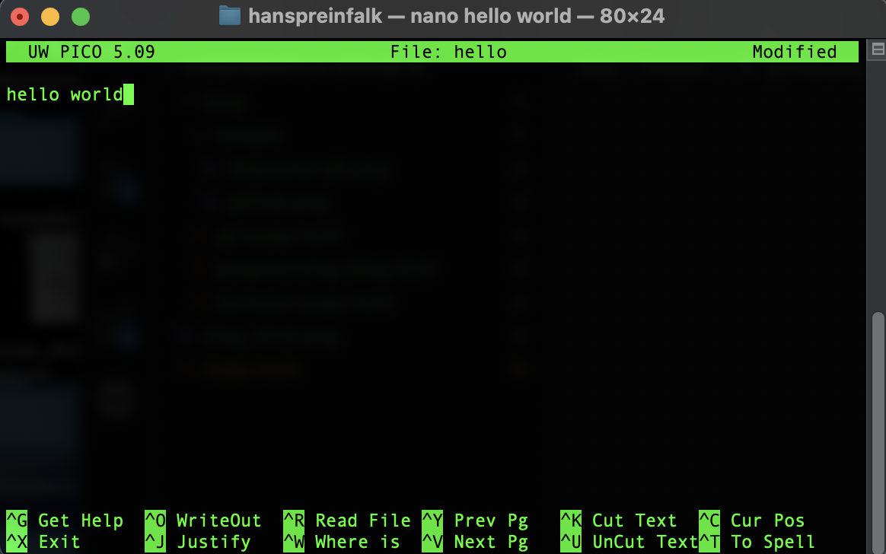

Introduction to the Terminal
The terminal (also known as command line, console, or shell) is a text-based interface for controlling your computer. Unlike a graphical interface where you interact with visual elements, in the terminal you type commands that the system interprets and executes.
Although it may seem intimidating at first, the terminal offers greater control and efficiency for many programming tasks.
Basic Terminal Commands
These are the most commonly used commands for navigating and manipulating files:
| Command | Description | Example |
|---|---|---|
pwd |
Shows current directory | pwd → /home/user/projects |
ls |
Lists files and directories | ls -la → shows hidden files with details |
cd |
Changes directory | cd Documents → goes to Documents folder |
mkdir |
Creates a new directory | mkdir new-project |
touch |
Creates an empty file | touch index.html |
rm |
Removes files or directories | rm file.txt or rm -r directory |
cp |
Copies files or directories | cp file.txt copy.txt |
mv |
Moves or renames files | mv file.txt new-name.txt |
cat |
Displays file content | cat file.txt |
echo |
Displays text or variable | echo "Hello world" |
Example Terminal Session
$ pwd
/home/user
$ mkdir web-project
$ cd web-project
$ touch index.html style.css
$ ls
index.html style.css
$ echo "console.log('Hello world')" > script.js
$ ls
index.html script.js style.css
$ cat script.js
console.log('Hello world')
/home/user
$ mkdir web-project
$ cd web-project
$ touch index.html style.css
$ ls
index.html style.css
$ echo "console.log('Hello world')" > script.js
$ ls
index.html script.js style.css
$ cat script.js
console.log('Hello world')
Advanced Commands
These commands are useful for more specific tasks:
- grep: Searches for patterns in files
- find: Searches for files matching certain criteria
- chmod: Changes file permissions
- chown: Changes file ownership
- ps: Shows running processes
- kill: Terminates processes
- tar: Compresses/extracts files
- history: Shows command history
- ssh: Connects to remote servers
- scp: Copies files between servers
# Search text in files
grep "function" *.js
# Find all HTML files
find . -name "*.html"
# Change permissions (give execution rights)
chmod +x script.sh
grep "function" *.js
# Find all HTML files
find . -name "*.html"
# Change permissions (give execution rights)
chmod +x script.sh
Redirections and Pipes
Redirections and pipes are powerful features that allow you to manipulate command input and output:
Redirection Operators
>: Redirects output to a file (overwrites)>>: Redirects output to a file (appends)<: Takes input from a file|: Pipe, sends output from one command as input to another
# Redirect output to a file
$ echo "# My Project" > README.md
# Append text to an existing file
$ echo "This is an example project" >> README.md
# Use pipes to filter output
$ ls -la | grep ".js"
$ echo "# My Project" > README.md
# Append text to an existing file
$ echo "This is an example project" >> README.md
# Use pipes to filter output
$ ls -la | grep ".js"
Tips and Tricks
- Use the Tab key to autocomplete commands and paths
- Press Ctrl+C to interrupt a running command
- Use the ↑ and ↓ arrows to navigate through command history
- Type clear or press Ctrl+L to clear the screen
- Use man [command] to see the manual for a specific command
- Add --help at the end of a command to see help options